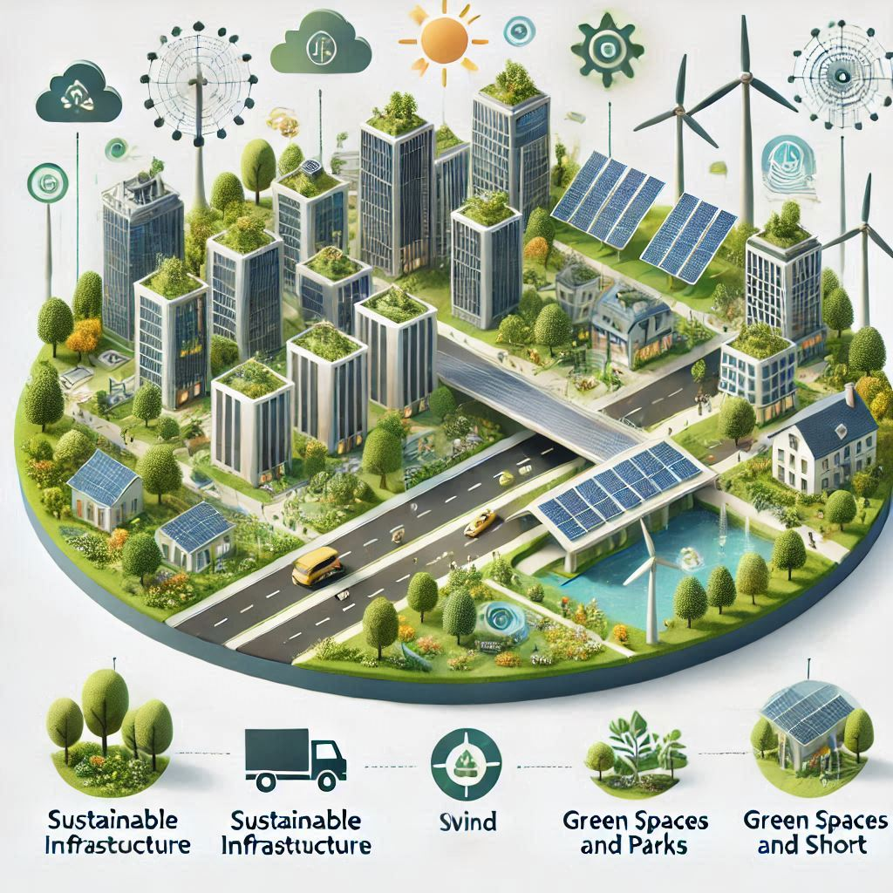

Smart City

A city that uses technology to improve everyone's quality of life is called a smart city. The streets, buildings, and
transit systems in a smart city are all linked to the internet and make use of technology to operate more effectively.
For instance, buses or trains may arrive on time due to real-time tracking, and traffic signals may automatically adjust
to lessen traffic congestion.
Sustainability and greenness are also key components of smart cities. Homes and buildings are powered by renewable
energy sources like wind turbines and solar panels. Also, smart trash cans that detect when they are full and need to be
emptied are available to help maintain a clean city.
In a smart city, green areas like parks are created so that people can enjoy nature, and electric automobiles and
self-driving cars contribute to pollution reduction. In general, smart cities seek to improve everyone's quality of life
by making it simpler, cleaner, and more enjoyable.
Building a Sustainable Future Together

Through the integration of green areas, smart mobility, and renewable energy, our city provides a glimpse of a future in
which innovation and nature coexist together. Here, each park, building, and street contributes to a larger, more
sustainable, and greener world. Come along with us as we build a future where people and the environment prosper.
The Smart City Backbone
How smart technologies are used in houses to improve convenience, climate management, and energy efficiency is explained
in Our Smart houses.
Wind and solar energy are examples of renewable energy sources that power the city's grid.
Composting, recycling initiatives, and smart bins are some of the methods used to reduce garbage.
Technology
Integrating IoT devices and smart grids for efficient city management.
Stay Updated on the Future
Suscribe to our newsletter.
Follow us on social media.